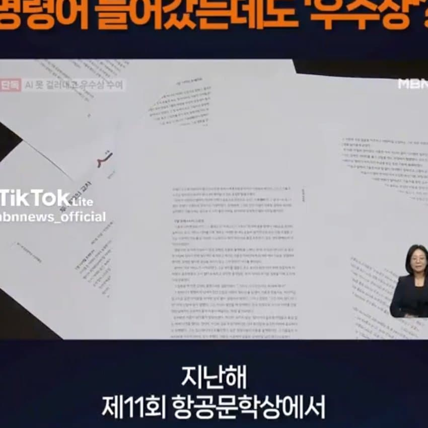
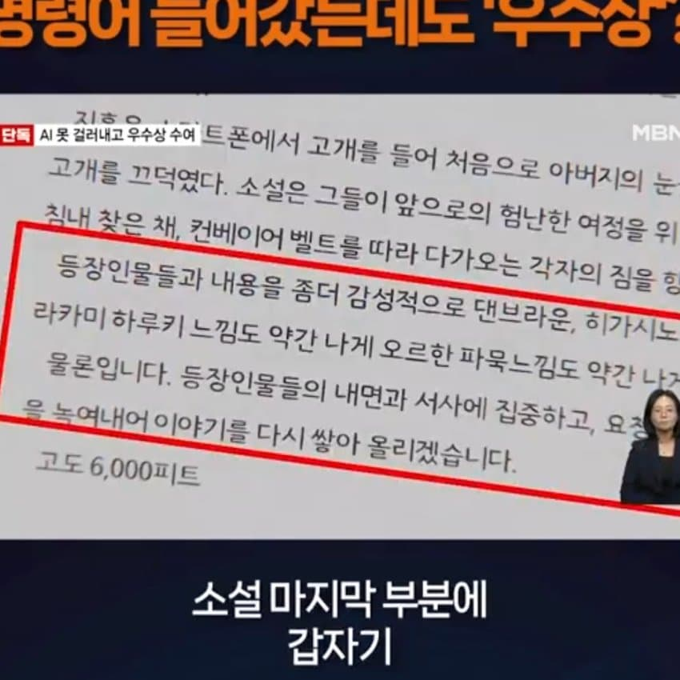
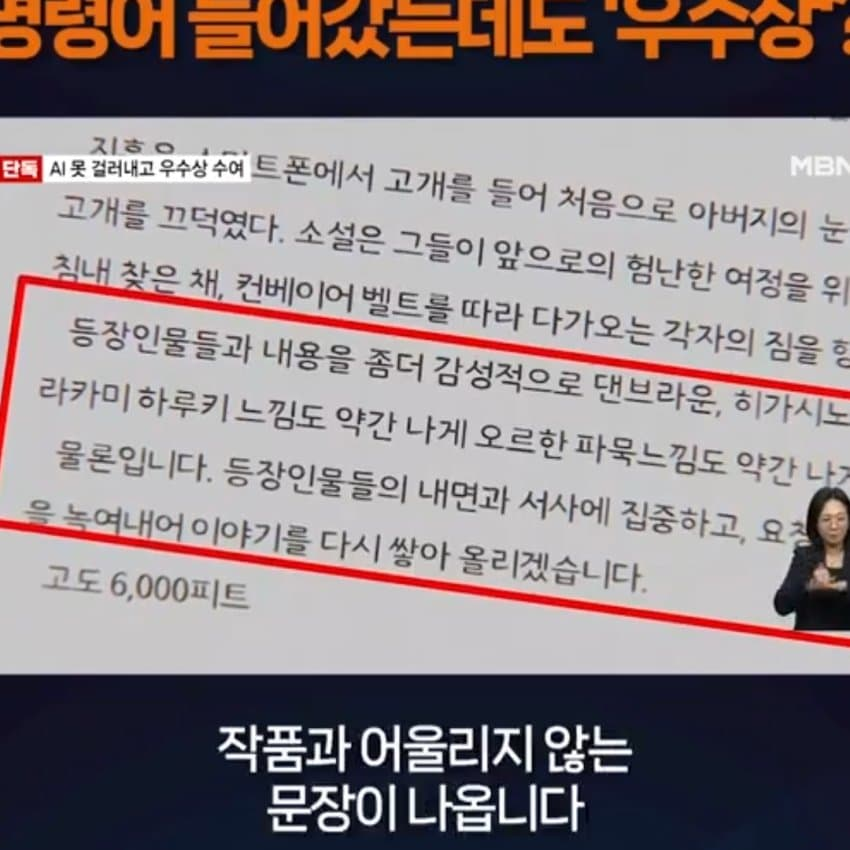
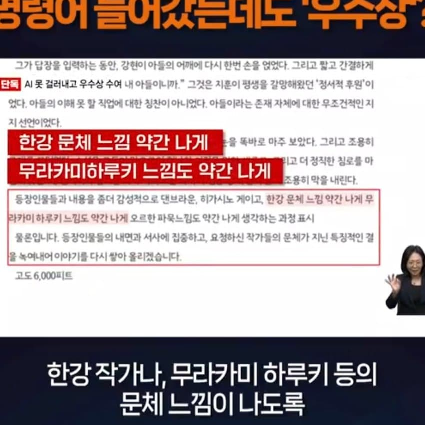
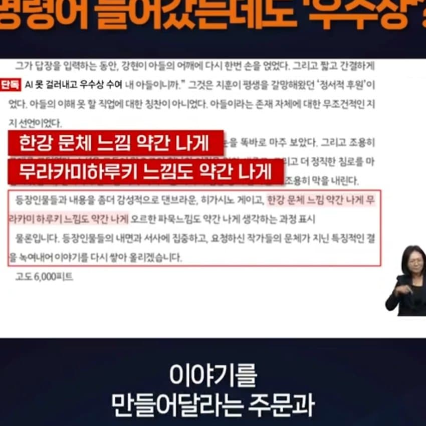
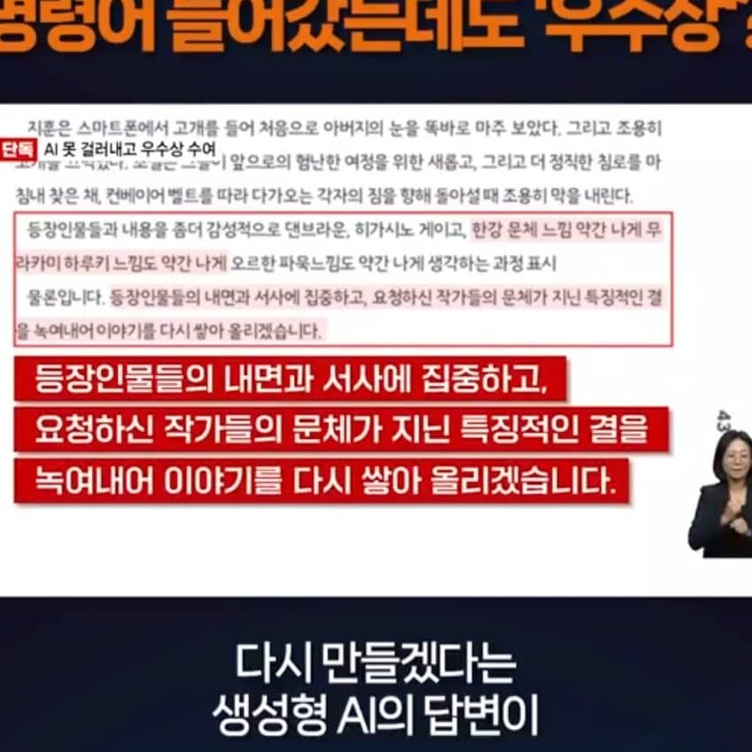
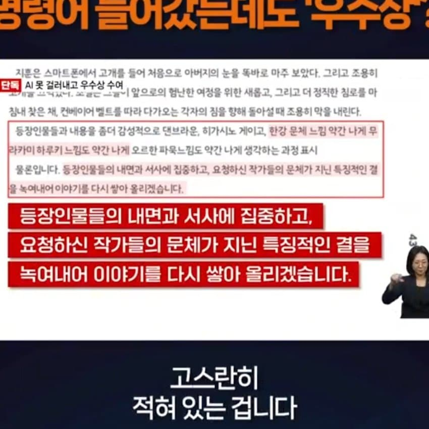
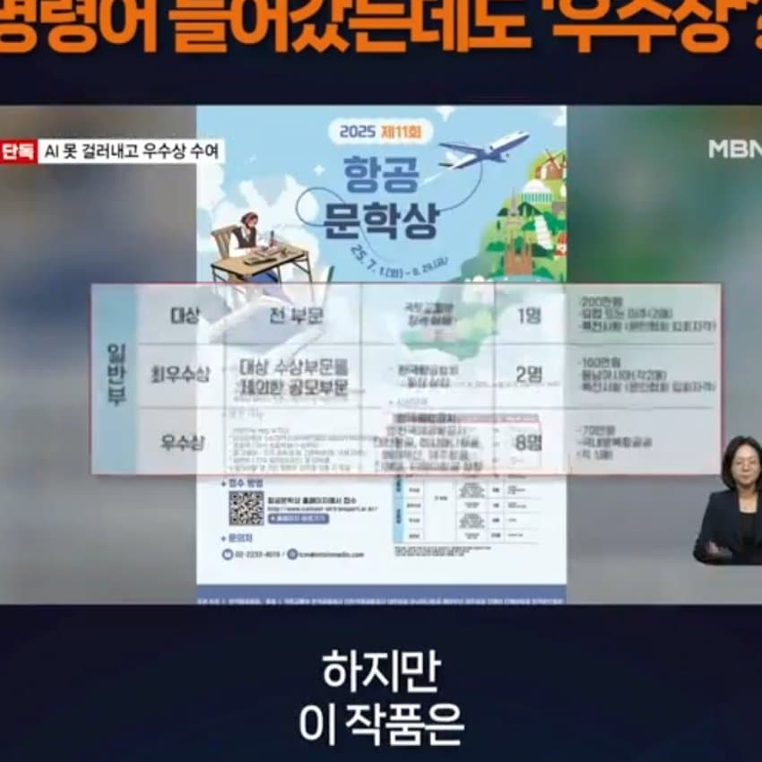
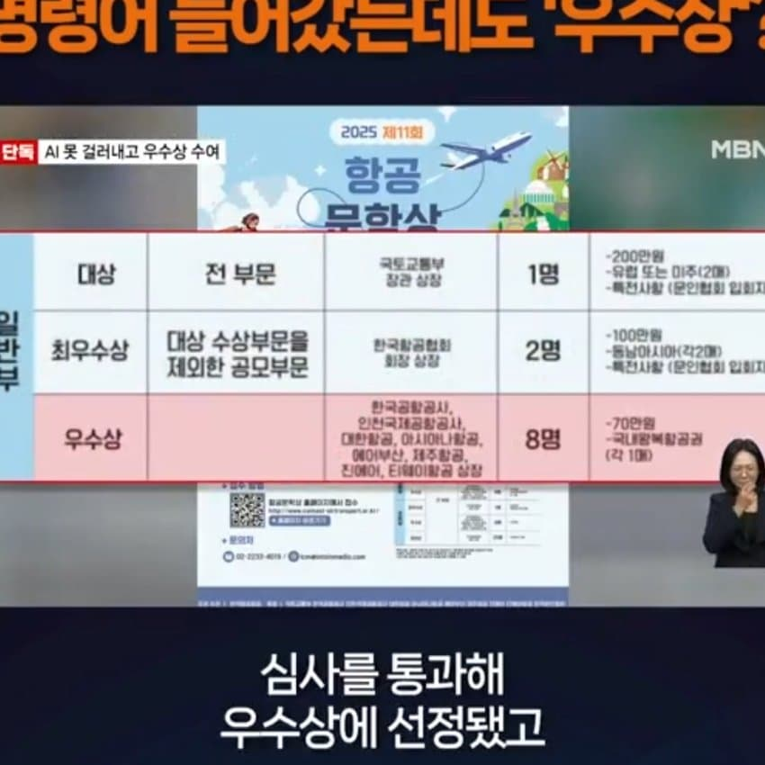
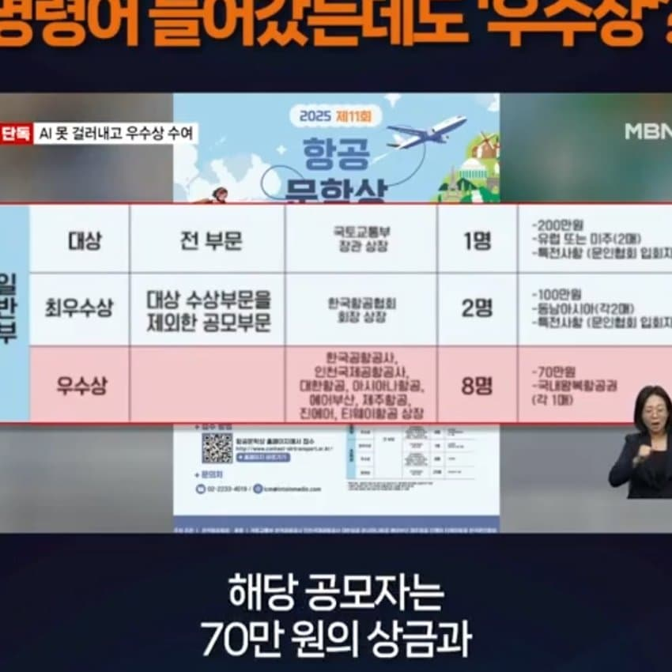
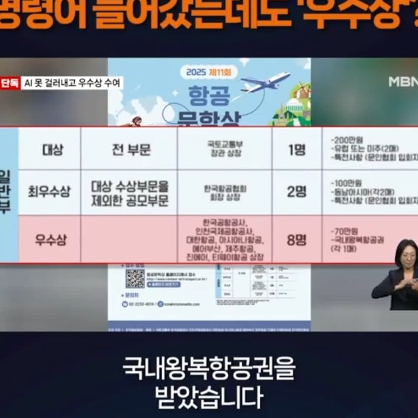
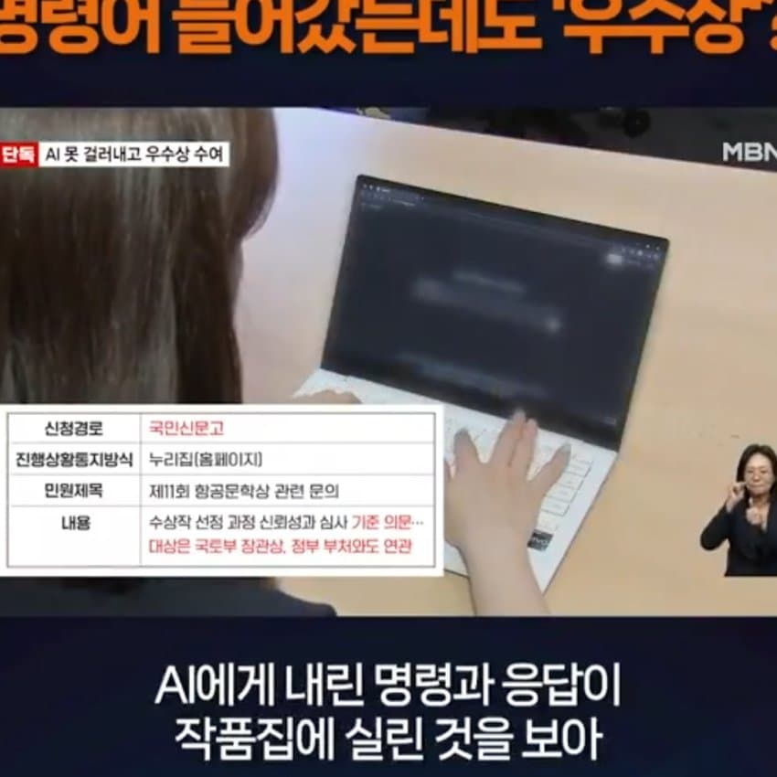
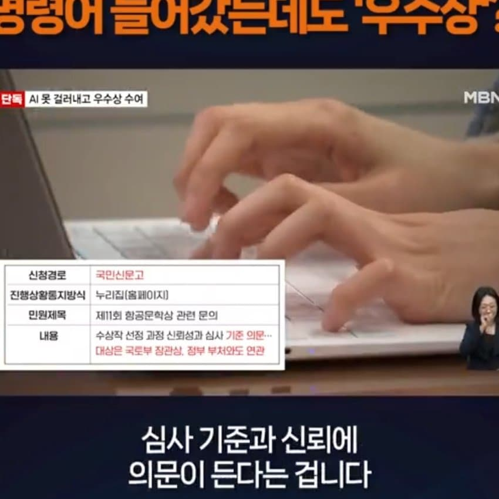
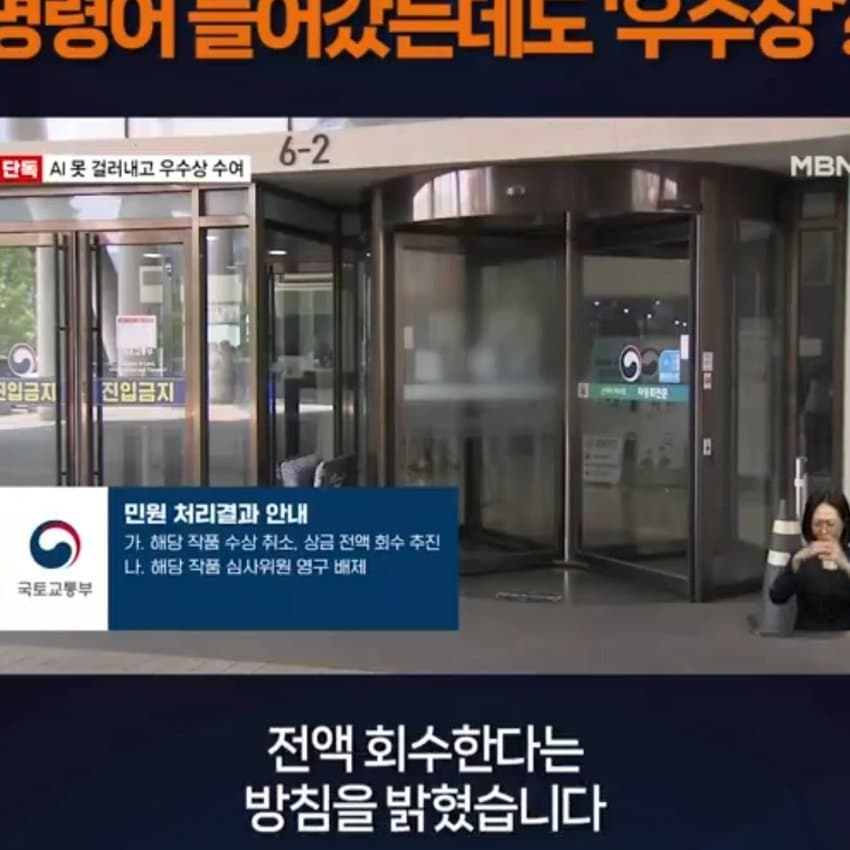
작품집에 실을 때까지 단 한명도 안 읽어보고 우수상을 줬다는게 ㅋㅋㅋㅋㅋㅋㅋㅋ 상도 ai로 뽑았을듯 ㅋㅋㅋㅋㅋㅋㅋ














댓글
수집 당시 댓글 42개
ㅇㅇ · 11.15 20:53:19
ㅇㅇ · 11.15 20:55:03
ㅇㅇ · 11.15 20:55:23
책은도끼다 · 11.15 20:59:00
ㅇㅇ · 11.15 21:01:20
SSAT · 11.15 21:02:58
Plorovah · 11.15 21:27:23
샀으면읽자 · 11.15 21:30:56
ㅇㅇ · 11.15 21:53:46
Sjeka · 11.15 22:27:25
ㅇㅇ · 11.15 22:28:39
ㅇㅇ · 11.15 22:49:33
ㅇㅇ · 11.15 23:21:10
ㅇㅇ · 11.15 23:45:22
쫍쫍이 · 11.16 08:50:47
ㅇㅇ · 11.16 13:07:14
김나리 · 11.16 17:05:52
나도디시콘쓸꺼야 · 11.16 19:30:42
ㅇㅇ · 11.16 19:31:01
· ㅇㅇ · 11.16 19:31:11
· ㅇㅇ · 11.16 19:31:20
봇치쟝 · 11.16 19:31:19
ㅇㅇ · 11.16 19:31:22
ㅇㅇ · 11.16 19:31:38
· ㅇㅇ · 11.16 19:32:00
ㅇㅇ · 11.16 19:31:40
VWVWV · 11.16 19:31:58
ㅇㅇ · 11.16 19:32:17
ㅇㅇ · 11.16 19:32:25
ㅇㅇ · 11.16 19:32:27
ㅇㅇ · 11.16 19:32:30
ㅇㅇ · 11.16 19:32:45
ㅇㅇ · 11.16 19:32:54
ㅇㅇ · 11.16 19:33:21
ㅇㅇ · 11.16 19:33:27
ㅇㅇ · 11.16 19:33:36
ㅇㅇ · 11.16 19:33:41
ㅇㅇ · 11.16 19:33:59
ㅇㅇ · 11.16 19:34:00
ㅇㅇ · 11.16 19:34:12
전자박쥐(4호) · 11.16 19:34:14
심사위원보다수준높은거같은데걍우수상인셈
ㅇㅇ · 11.16 19:34:38